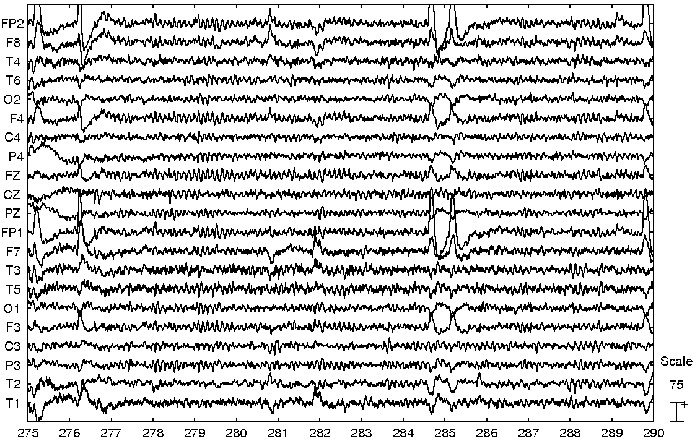
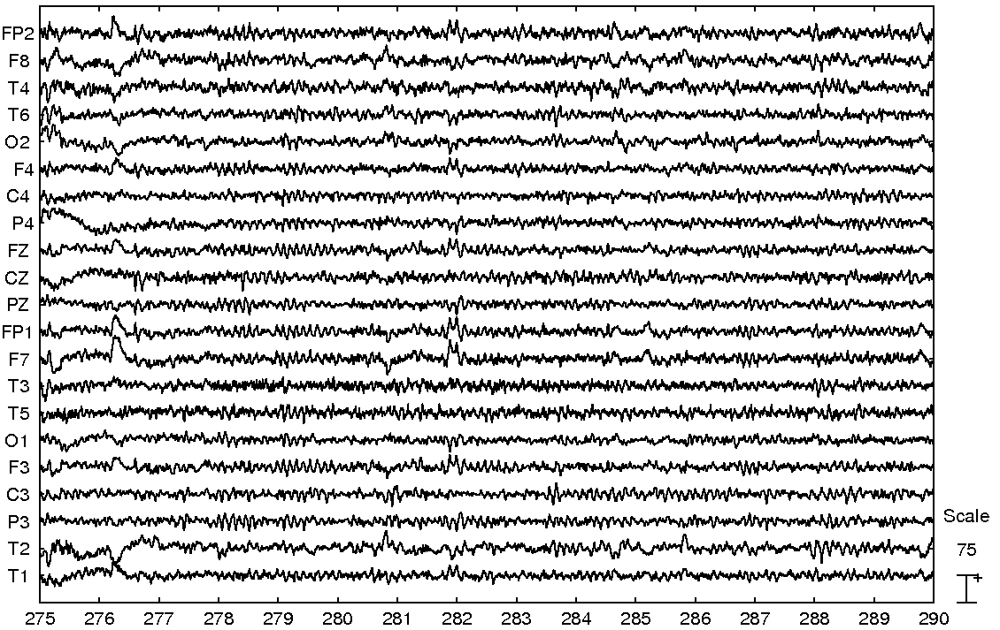
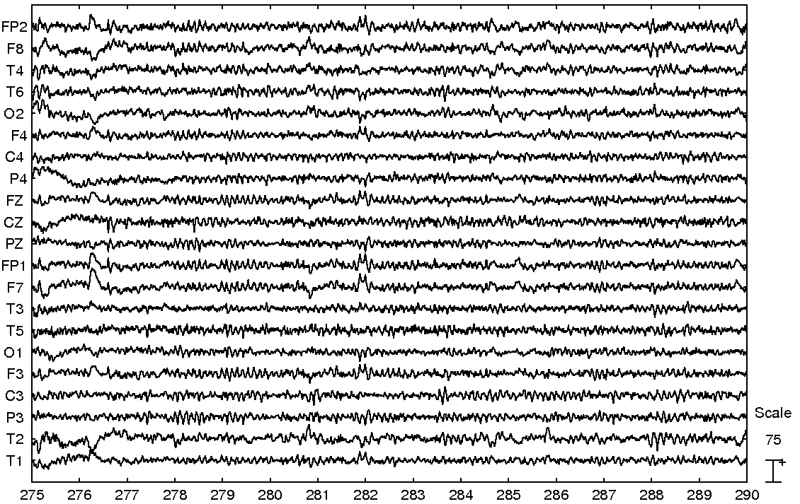
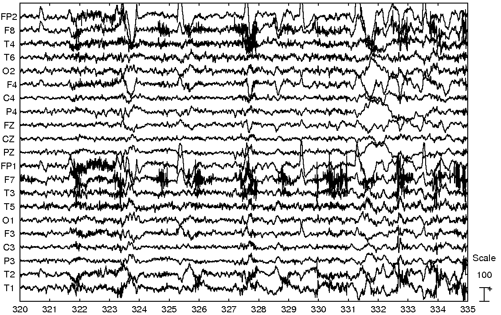
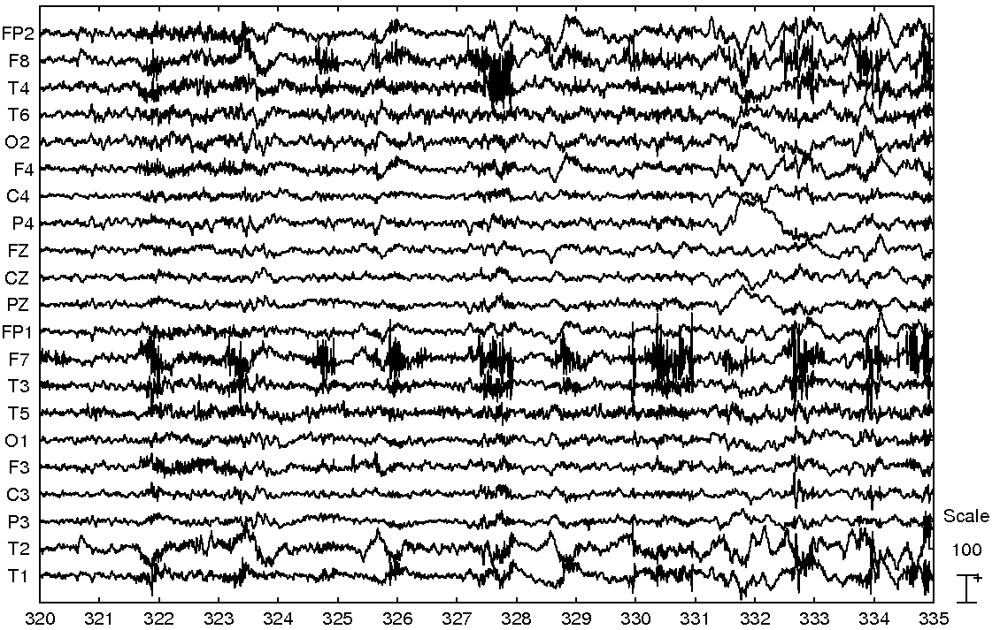
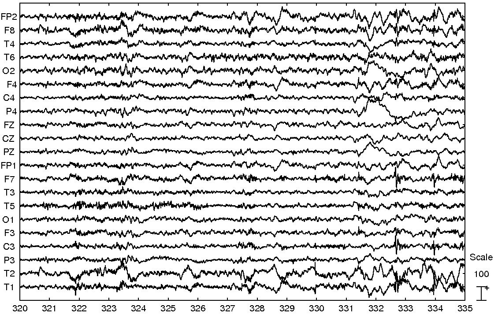
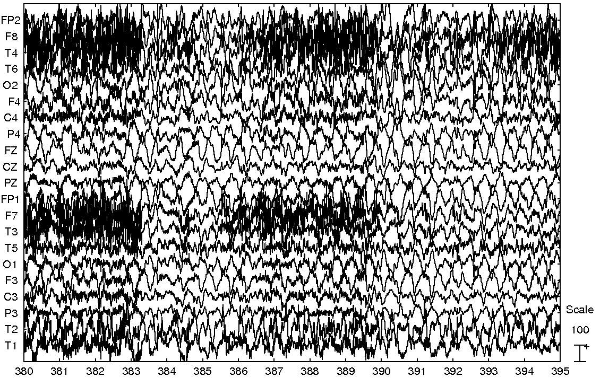
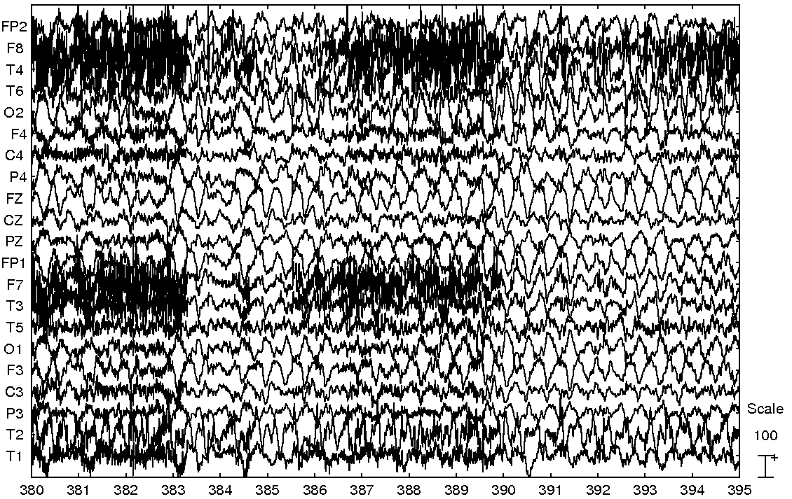
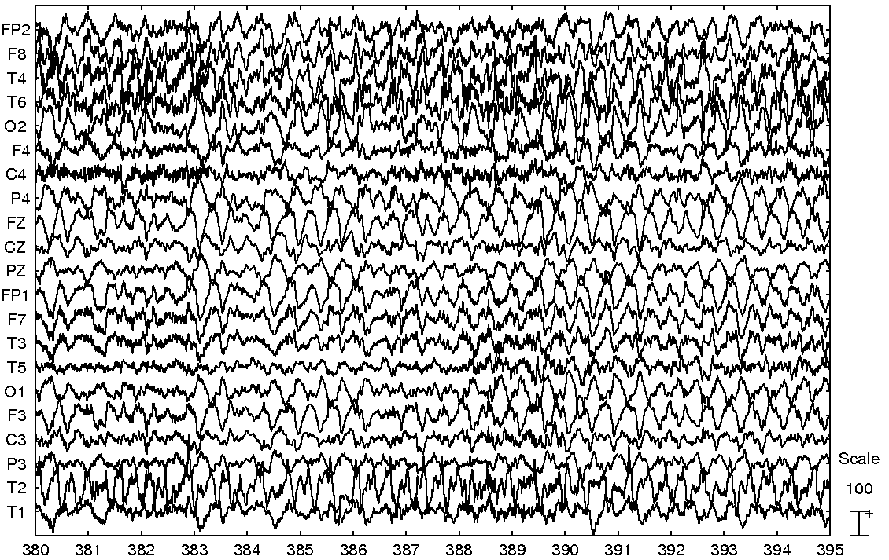

Next: Version history
Up: Automatic Artifact Removal (AAR)
Previous: EOG and EMG removal
Contents
In this section we show few correction examples obtained with a long-term EEG recording from a patient suffering Mesial Temporal Lobe Epilepsy. The data was provided by our collaborators at the Kaholieke Universiteit Leuven (Belgium) and was collected from 21 scalp electrodes placed according to the international 10-20 System with addition electrodes T1 and T2 on the temporal region. The sampling frequency was 250 Hz and an average reference montage was used. The dataset did not have EOG channels and therefore regression-based techniques were not suitable for removing EOG artifacts. Thus, we used the default BSS-based EOG removal algorithm included in the toolbox to suppress as much EOG activity as possible. Subsequently, we used the EMG correction algorithm to remove EMG artifacts. It is important to notice when using any of the BSS-based algorithms included in the toolbox that the corrected dataset will be rank deficient. Also, the order in which the algorithms are applied is important and the results differ depending on the order in which EOG and EMG artifacts are removed. In general, we have observed that slightly better results are obtained when removing EOG artifacts first.
In Fig. 8 we show a frame of original EEG spanning from second 275 to second 290. Observe that this EEG frame contains just few blinks and almost no EMG artifacts. In Fig. 9 we show the result of the automatic EOG correction algorithm. Notice how the blinks were almost perfectly removed while the clean EEG was not significantly altered. In Fig. 10 we show the result of applying EMG correction algorithm on the EOG corrected dataset. We can observed that Fig. 9 and Fig. 10 are almost identical, which is a desirable result since there was very little EMG activity in this EEG frame.
In Fig 11 we show the EEG frame that covers the temporal range from second 320 to second 335, which corresponds to the first clinical signs of a seizure. This frame is heavily contaminated by EMG artifacts and contains also some ocular artifacts. In Fig 12 is the result of removing the EOG artifacts and in Fig. 13 after removing also the EMG artifacts.
In Fig. 14 appears the EEG from second 380 to second 395. This EEG frame contains little EOG activity but is considerably distorted by several EMG bursts. In Fig. 15 is shown the output of the EOG correction algorithm. As can be observed, the algorithm did not modified significantly the data as was expected. In Fig. 16 appears the results of removing both EOG and EMG artifacts. Notice that most EMG artifacts were removed, while the sharp quality ictal theta activity was preserved.
Figure 8:
Original EEG frame.
|  |
Figure 9:
EOG corrected frame.
|  |
Figure 10:
EOG and EMG corrected frame.
|  |
Figure 11:
Original EEG frame.
|  |
Figure 12:
EOG corrected frame.
|  |
Figure 13:
EOG and EMG corrected frame.
|  |
Figure 14:
Original EEG frame.
|  |
Figure 15:
EOG corrected frame.
|  |
Figure 16:
EOG and EMG corrected frame.
|  |
Next: Version history
Up: Automatic Artifact Removal (AAR)
Previous: EOG and EMG removal
Contents
gomezher
2007-12-10